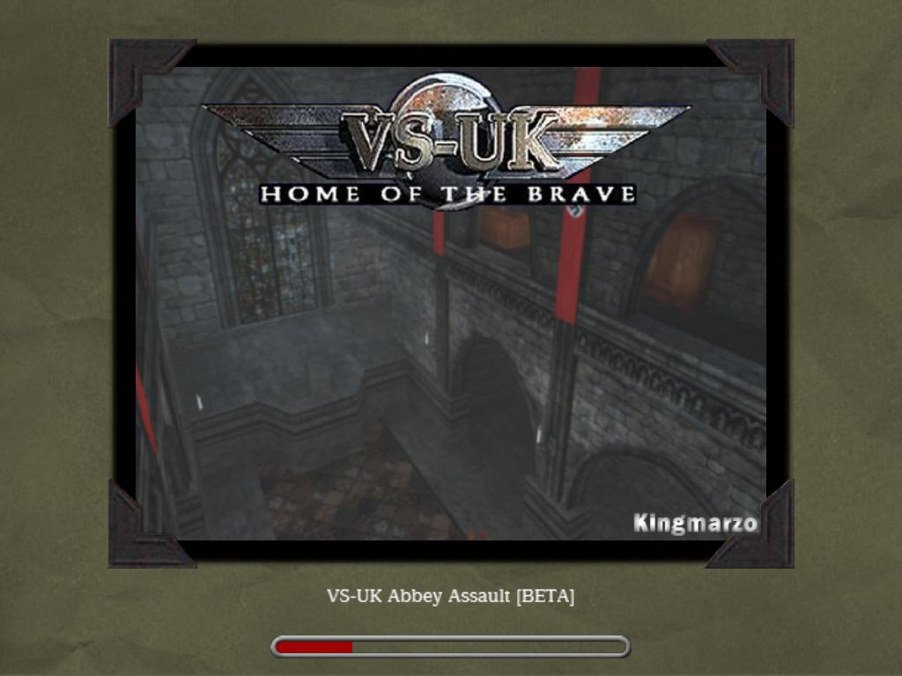
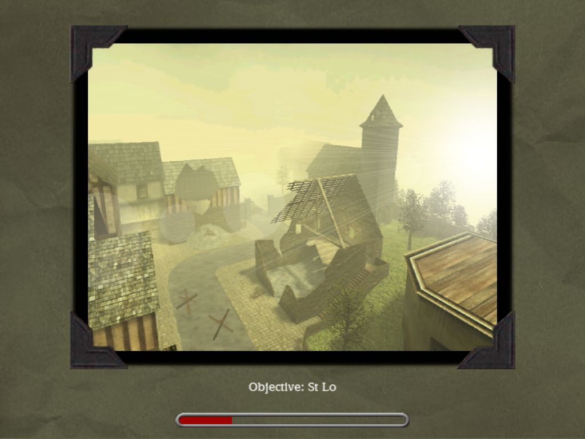

<section>
  <div class="container">
    <h1>Rules</h1>
    <ol class="cup2on2ol">
      <li>
        We divide players into 3 buckets by rank, to be counted by rank you must have played more than 5 games in the league, but also played more than 5 games in the last month. Your ranking as of 12/12/2022 determines the allocation to the basket.
        <div class="bucket">
          <ol>
            <div>BUCKET 1</div>
            <li>Zielony (1,256.59)</li>
            <li>Zielakpr0 (1,189.37)</li>
            <li>SzyCha (1,101.37)</li>
            <li>KaPsEL (1,038.33)</li>
            <li>Cronic (1,026.12)</li>
            <li>Helm0r (1,021.93)</li>
            <li>Wariat (995.36)</li>
            <li>Neo (992.56)</li>            
          </ol>
          <ol>
            <div>BUCKET 2</div>
            <li>bAtOn (991.85)</li>
            <li>Evildude (988.18)</li>  
            <li>jojo (968.30)</li>
            <li>BL@DY (965.91)</li>
            <li>P3dr0 (959.15)</li>
            <li>omega (955.02)</li>
            <li>Jim (948.43)</li>
            <li>-Illu$ioN-(946.05)</li>
          </ol>
          <ol>
            <div>BUCKET 3</div>
            <li>Meg@Sh!Ra (946.02)</li>
            <li>kurier (930.62)</li>
            <li>gRaBaRz (920.87)</li>
            <li>GlowaF1! (885.51)</li>
            <li>ManikE (988.15 - 2 wars)</li>
            <li>MaDiNfO (983.48 - 1 war in last 30 days)</li>
            <li>Farnoy (977.09 - 5 wars)</li> 
            <li>Wicio (inactive)</li>
          </ol>
        </div>
      </li>
      <li>
        The draw of teams for the Cup live on discord at 22:00 Tuesday 12.12.2022
      </li>
      <li>
        CUP based rules: DOUBLE ELIMINATION (Winner and Loser Brackets)
      </li>
      <li>Time play: <strong>7 rounds</strong></li>
      <li>Each round <strong>4 minutes</strong></li>
      <li>Players have <strong>14 days</strong> from selected to play their war</li>
      <li>5 maps to choose from: 
        <strong>The Hunt, V2, The Bridge, Stlo, VSUK Abbey</strong>
        <div class="maps">
          
          
          
          
          
        </div>
      </li>
      <li>Teams before war will baning maps i.e: <strong>Team 1 - ban Stlo, Player 2 - ban VSUK Abbey, Team 1 - chose The Bridge, Team 2 - chose V2, <br>so they play The Bridge & V2 in case of draw next map will be The Hunt.</strong></li>
      <li>Servers available: KaPsEL server or discord servers (ask admin)</li>
      <li>
      If there is no squad, a 2v3 match is allowed (2v2 not allowed)</li>
      <li>Teams are required to send screenshots with the results from the war to the admin. Admin can make a force screenshots druing the game, player must to send the screenshots to admin as soon as possible after war (10 mintus max!)</li>              
      <li>Disputes are settled by the league committee (-Illu$ioN-, KaPsEL, bAtOn).</li>
    </ol>          
    
  </div>
</section>
